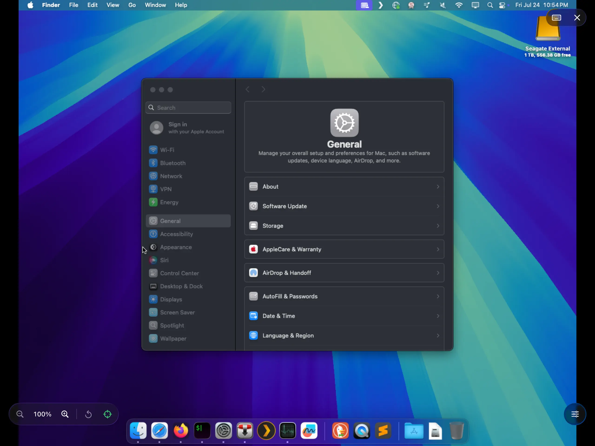
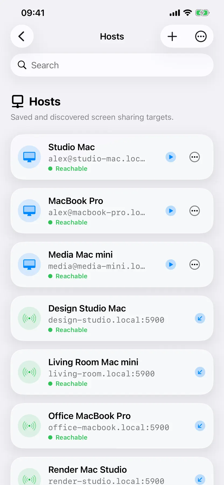
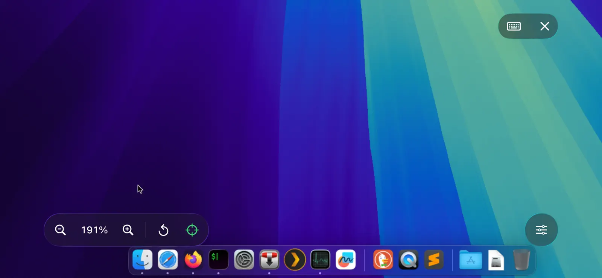
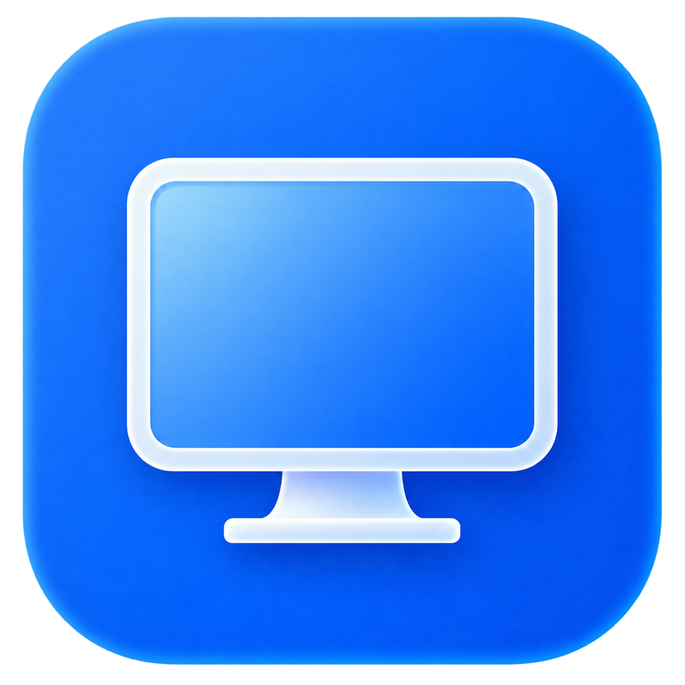

Keyboard shortcuts
Onscreen or hardware keyboard, with Command, Control, and Option.
Glassy Desk for iPad and iPhone
Control your Mac from your iPhone or iPad.
Free to try.


Nearby Macs show up automatically. Save them and reconnect in one tap.
Use the free Mac companion for a fast, smooth connection, or standard VNC with built-in Screen Sharing.
Tap to click, drag to move, pinch to zoom. Or use the screen as a trackpad for precision.

Onscreen or hardware keyboard, with Command, Control, and Option.
Recent sessions, per-Mac settings, and automatic reconnection.
Connect to a saved Mac by voice or from a shortcut.
Your device connects straight to your Mac. Away from home, use a VPN like Tailscale.
Privacy PolicyPair with a code shown on your Mac.
Saved Macs sync through your private iCloud.
Saved passwords are stored in the Keychain and encrypted.

Recommended
Install Glassy Desk for Mac, allow its permissions, and pair with a QR code.
Get Glassy Desk for MacFree Mac companion · macOS 14 or later
Built into macOS
Turn on Screen Sharing in System Settings → General → Sharing, then choose Standard VNC in Glassy Desk.
No companion download needed
For the best experience, install Glassy Desk for Mac. Standard VNC works without it.
Yes, with Tailscale. See the setup guide.
Timed sessions. Pro removes the limit, with monthly, yearly, and lifetime options.
iPhone and iPad on iOS 26 or later. The Mac companion needs macOS 14 or later.
Free to try on iPhone and iPad.
Download on the App Store Get the Mac companion